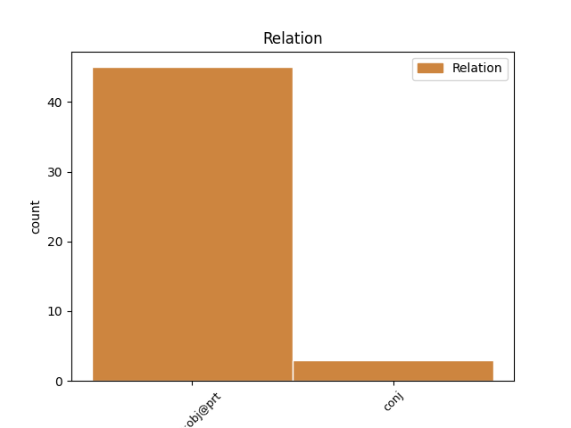
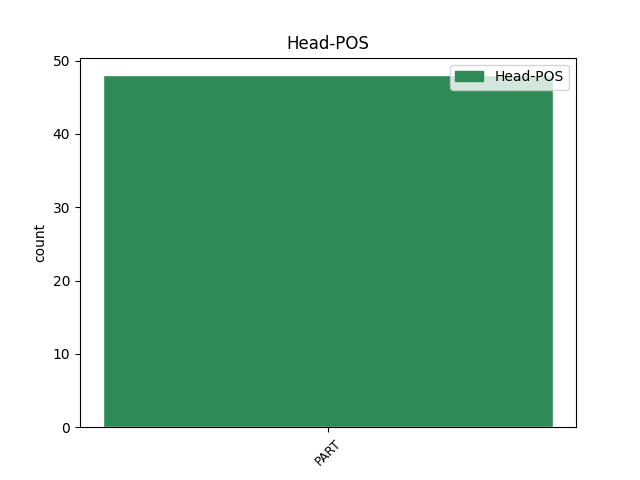
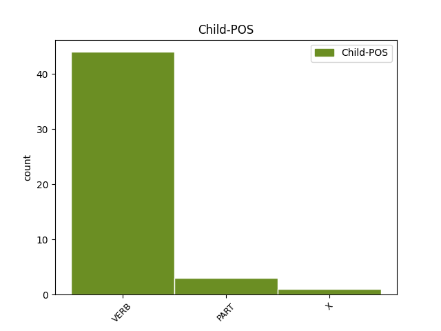

Distribution of features within this leaf



Agreement Rules sorted by frequency.
- When the dependent token is the direct object complements(comp:obj@prt) of the head token, and the head token is PART
1 B' _ _ _ _ 0 _ _ _
2 fhéidir _ _ _ _ 0 _ _ _
3 nach _ _ _ _ 0 _ _ _
4 mbeadh _ _ _ _ 0 _ _ _
5 a _ _ _ _ 0 _ _ _
6 thuilleadh _ _ _ _ 0 _ _ _
7 achrainn _ _ _ _ 0 _ _ _
8 ann _ _ _ _ 0 _ _ _
9 -- _ _ _ _ 0 _ _ _
10 ach _ _ _ _ 0 _ _ _
11 gur gur PART Vb PartType=Vb|Tense=Past 0 _ _ _
12 ghéill géill VERB VTI Form=Len|Mood=Ind|Tense=Past 11 comp:obj@prt _ _
13 Louis _ _ _ _ 0 _ _ _
14 don _ _ _ _ 0 _ _ _
15 dream _ _ _ _ 0 _ _ _
16 a _ _ _ _ 0 _ _ _
17 bhí _ _ _ _ 0 _ _ _
18 á _ _ _ _ 0 _ _ _
19 áiteamh _ _ _ _ 0 _ _ _
20 air _ _ _ _ 0 _ _ _
21 teitheadh _ _ _ _ 0 _ _ _
22 as _ _ _ _ 0 _ _ _
23 an _ _ _ _ 0 _ _ _
24 tír _ _ _ _ 0 _ _ _
25 mar _ _ _ _ 0 _ _ _
26 a _ _ _ _ 0 _ _ _
27 rinne _ _ _ _ 0 _ _ _
28 a _ _ _ _ 0 _ _ _
29 dheartháireacha _ _ _ _ 0 _ _ _
30 agus _ _ _ _ 0 _ _ _
31 deartháir _ _ _ _ 0 _ _ _
32 a _ _ _ _ 0 _ _ _
33 chéile _ _ _ _ 0 _ _ _
34 . _ _ _ _ 0 _ _ _
1 Bhí _ _ _ _ 0 _ _ _
2 fearg _ _ _ _ 0 _ _ _
3 orm _ _ _ _ 0 _ _ _
4 nár _ _ _ _ 0 _ _ _
5 bacadh _ _ _ _ 0 _ _ _
6 liom _ _ _ _ 0 _ _ _
7 - _ _ _ _ 0 _ _ _
8 nár nár PART Vb PartType=Cmpl|Tense=Past 0 _ _ _
9 fiafraíodh _ _ _ _ 0 _ _ _
10 scéala _ _ _ _ 0 _ _ _
11 díom _ _ _ _ 0 _ _ _
12 - _ _ _ _ 0 _ _ _
13 nár nár PART Vb PartType=Cmpl|Tense=Past 8 conj _ _
14 cuireadh _ _ _ _ 0 _ _ _
15 ceist _ _ _ _ 0 _ _ _
16 orm _ _ _ _ 0 _ _ _
17 i _ _ _ _ 0 _ _ _
18 dtaobh _ _ _ _ 0 _ _ _
19 na _ _ _ _ 0 _ _ _
20 timpiste _ _ _ _ 0 _ _ _
21 a _ _ _ _ 0 _ _ _
22 d' _ _ _ _ 0 _ _ _
23 éirigh _ _ _ _ 0 _ _ _
24 dom _ _ _ _ 0 _ _ _
25 ; _ _ _ _ 0 _ _ _
26 ach _ _ _ _ 0 _ _ _
27 nuair _ _ _ _ 0 _ _ _
28 a _ _ _ _ 0 _ _ _
29 dhearc _ _ _ _ 0 _ _ _
30 ógbhean _ _ _ _ 0 _ _ _
31 dheas _ _ _ _ 0 _ _ _
32 a _ _ _ _ 0 _ _ _
33 bhí _ _ _ _ 0 _ _ _
34 ag _ _ _ _ 0 _ _ _
35 dul _ _ _ _ 0 _ _ _
36 thart _ _ _ _ 0 _ _ _
37 go _ _ _ _ 0 _ _ _
38 truamhéileach _ _ _ _ 0 _ _ _
39 orm _ _ _ _ 0 _ _ _
40 , _ _ _ _ 0 _ _ _
41 agus _ _ _ _ 0 _ _ _
42 í _ _ _ _ 0 _ _ _
43 ar _ _ _ _ 0 _ _ _
44 tí _ _ _ _ 0 _ _ _
45 labharta _ _ _ _ 0 _ _ _
46 , _ _ _ _ 0 _ _ _
47 tháinig _ _ _ _ 0 _ _ _
48 cuthach _ _ _ _ 0 _ _ _
49 orm _ _ _ _ 0 _ _ _
50 . _ _ _ _ 0 _ _ _
Disagree Examples:
1 Ach _ _ _ _ 0 _ _ _
2 , _ _ _ _ 0 _ _ _
3 ó _ _ _ _ 0 _ _ _
4 thaobh _ _ _ _ 0 _ _ _
5 na _ _ _ _ 0 _ _ _
6 healaíne _ _ _ _ 0 _ _ _
7 de _ _ _ _ 0 _ _ _
8 , _ _ _ _ 0 _ _ _
9 teipeann _ _ _ _ 0 _ _ _
10 go _ _ _ _ 0 _ _ _
11 hiomlán _ _ _ _ 0 _ _ _
12 ar _ _ _ _ 0 _ _ _
13 an _ _ _ _ 0 _ _ _
14 bParlaimint _ _ _ _ 0 _ _ _
15 mar _ _ _ _ 0 _ _ _
16 phíosa _ _ _ _ 0 _ _ _
17 liteartha _ _ _ _ 0 _ _ _
18 , _ _ _ _ 0 _ _ _
19 de _ _ _ _ 0 _ _ _
20 bhrí _ _ _ _ 0 _ _ _
21 nach nach PART Vb PartType=Cmpl|Tense=Past 0 _ _ _
22 bhfuil bí VERB VI Form=Ecl|Mood=Ind|Tense=Pres 21 comp:obj@prt _ _
23 an _ _ _ _ 0 _ _ _
24 t-údar _ _ _ _ 0 _ _ _
25 in _ _ _ _ 0 _ _ _
26 ann _ _ _ _ 0 _ _ _
27 an _ _ _ _ 0 _ _ _
28 dá _ _ _ _ 0 _ _ _
29 réim _ _ _ _ 0 _ _ _
30 cainte _ _ _ _ 0 _ _ _
31 a _ _ _ _ 0 _ _ _
32 nascadh _ _ _ _ 0 _ _ _
33 i _ _ _ _ 0 _ _ _
34 stíl _ _ _ _ 0 _ _ _
35 mhín _ _ _ _ 0 _ _ _
36 leanúnach _ _ _ _ 0 _ _ _
37 . _ _ _ _ 0 _ _ _